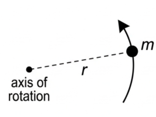
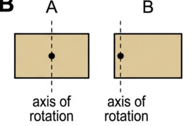
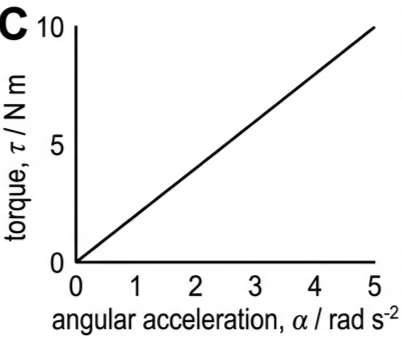
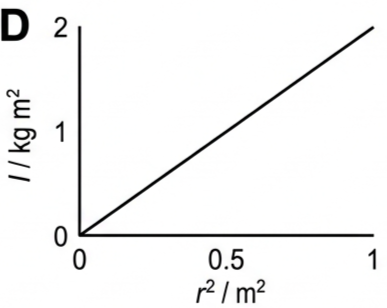
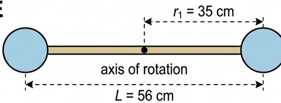
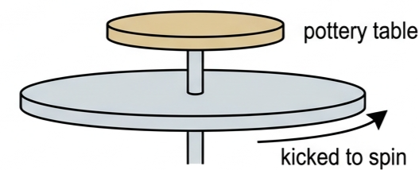
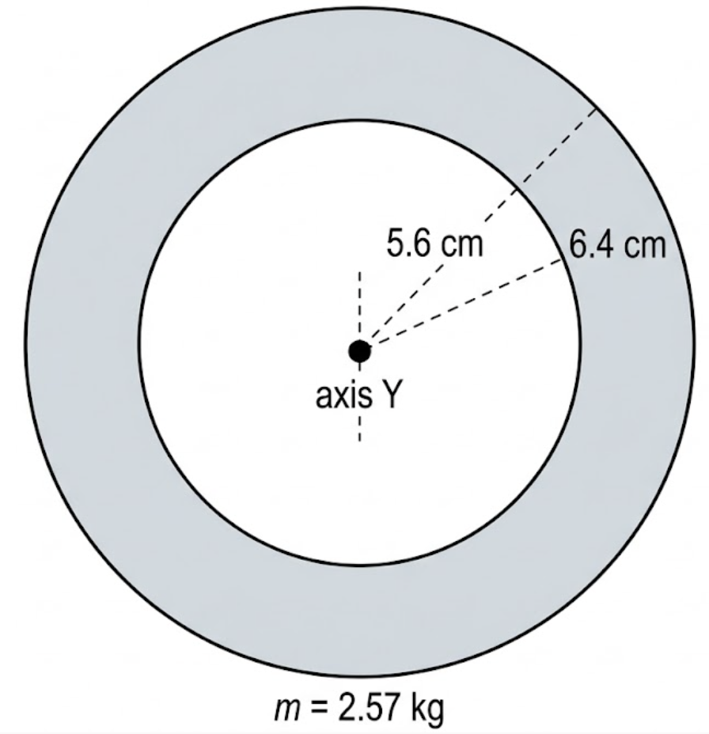

🚪 Hook – the door that won't budge
Push a door near its hinge and it barely moves; push the same door with the same force near the handle, far from the hinge, and it swings open easily. The mass of the door hasn't changed. What has changed is how far the mass is from the axis of rotation — and that is the whole idea behind this lesson.

🌀 From inertia to moment of inertia
In Topic A.2 we saw that when a resultant force is applied to an object, the result is a linear acceleration, the magnitude of which depends on the mass of the object. Resistance to a change of motion (acceleration) is called inertia.
For rotational motion, we also need to consider how the mass is distributed around the axis. Consider two objects, A and B, with the same mass and shape but different axes of rotation: object A will require more force to produce a certain angular acceleration than object B. We say that A has a larger moment of inertia than B.

Moment of inertia, I, quantifies the resistance to a change of rotational motion of an object; it depends on the distribution of mass around the chosen axis of rotation. The SI unit of moment of inertia is kg m². Most spherical objects can be considered to behave like masses concentrated at their centre points — their centre of mass is at the centre of the sphere.
In principle, the moment of inertia of any real, extended mass can be found by adding the individual moments of inertia of its point masses:
The symbol Σ means "sum of". In practice, the moments of inertia of most simple-shaped objects about specific axes are well known.
📐 Standard shapes – no need to memorise
There is no need to remember these results, or to know how they were derived, because equations will be provided in the examination paper if needed. What matters is being able to select and use the right one for a given axis.

✍️ Worked example 1 – a simple pendulum (A4.6)
Determine the moment of inertia of a 24 g simple pendulum of length 90 cm.
🧮 Tool 3: Percentage change and percentage difference
Use percentage difference to compare two independent quantities, and percentage change when one quantity becomes another.
Example — using Fig 3, determine the percentage difference between the moments of inertia (about a central axis) of a solid sphere of mass 1.0 kg and a thin spherical shell of mass 100 g, both of radius 12 cm.
\(I_{\text{sphere}} = \tfrac25 \times 1.0 \times 0.12^2 = 5.76\times10^{-3}\ \text{kg m}^2\)
\(I_{\text{shell}} = \tfrac23 \times 0.10 \times 0.12^2 = 9.60\times10^{-4}\ \text{kg m}^2\)
difference \(= 4.80\times10^{-3}\ \text{kg m}^2\); mean \(= 3.36\times10^{-3}\ \text{kg m}^2\)
\(\text{\% diff} = 100\times(4.80\times10^{-3})/(3.36\times10^{-3}) = 143\%\)
Percentage change example — a torque increases from 12 N m to 18 N m: change \(= +6\) N m, so \(\text{\% change} = 100\times6/12 = +50\%\). If instead the torque fell from 18 N m to 12 N m: \(\text{\% change} = 100\times(-6)/18 = -33\%\).
📈 Graphs used to find and use I
| Graph type | Axes (X, Y) | Shape | What to read |
|---|---|---|---|
| Torque against angular acceleration | Angular acceleration, α / rad s⁻² · Torque, τ / N m | Straight line through the origin | Gradient = moment of inertia, I (from \(\tau = I\alpha\), covered next lesson) |
| Moment of inertia against r² for a point mass | r² / m² · I / kg m² | Straight line through the origin | Gradient = mass, m (since \(I = mr^2\)) |


✍️ Worked example 2 – a 'dumb-bell' arrangement (A4.7)
Two spherical masses, each of mass \(m_1 = 2.0\) kg, rotate about an axis that is a distance \(r_1 = 35\) cm from both of their centres, connected by a rod of mass \(m_2 = 400\) g, length \(L = 56\) cm and radius \(r_2 = 1.2\) cm. (a) Determine the overall moment of inertia of the arrangement. (b) Calculate the percentage that the rod contributes to the overall moment of inertia.
\(= (2\times2.0\times0.35^2) + (\tfrac1{12}\times0.400\times0.56^2)\)
\(= 0.490 + 1.045\times10^{-2}\)
(b) \(100\times(0.01045/0.50045) = 2.1\%\).

🏺 Real-world: flywheels
Flywheels are added to the axes of rotating machinery to resist changes of motion and/or to store rotational kinetic energy. They need to have large moments of inertia. Figure 7 shows an old-fashioned example, a potter's wheel: the large wheel at the bottom is kicked for a while until it is spinning quickly. After that, because it has a large moment of inertia, there is no need to keep kicking the wheel continuously to maintain its motion.

🚀 HL extension – a thick-walled tube
The standard shapes in Fig 3 don't cover every geometry you might meet. A thick-walled cylindrical tube (an annulus) of inner radius \(r_1\) and outer radius \(r_2\), rotating about its central axis, has:
This reduces to the solid disc formula when \(r_1 = 0\), and to the hoop formula when \(r_1 \approx r_2\) — a useful check that a formula is being applied correctly.
Challenge: a thick-walled tube of mass 2.57 kg has inner radius 5.6 cm and outer radius 6.4 cm. What is its moment of inertia about its central axis? Answer: \(I = \tfrac12\times2.57\times(0.056^2+0.064^2) = 9.3\times10^{-3}\) kg m² — and note the length, L, of the tube doesn't appear in the formula at all.
⚠️ Trap corner – common mistakes
| Misconception | Correct view |
|---|---|
| A bigger mass always means a bigger moment of inertia | I depends on both mass and how far it sits from the axis (\(I=mr^2\)). A small mass far from the axis can have a larger I than a large mass close to it |
| Moment of inertia is a fixed property of an object, like its mass | I depends on the chosen axis of rotation. The same object has a different I for every different axis (Fig 2 and Fig 3) |
| r in \(I = mr^2\) means the object's radius | r is the distance of the mass from the axis of rotation — for a point mass that's just its distance from the axis, not a "size" |
| The standard formulas (Fig 3) must be memorised for the exam | They will be provided in the exam paper if needed — what's examined is choosing and applying the right one |
| Extending an object's mass further from the axis always changes I by the same factor as the distance | I depends on \(r^2\), not r — doubling the radius quadruples the moment of inertia for a point mass (see Question 13b) |
Complete the statements:
✓ \(r = 1.5\times10^{8}\ \text{km} = 1.5\times10^{11}\) m.
✓ \(I = (6.0\times10^{24})\times(1.5\times10^{11})^2 \approx 1.4\times10^{47}\ \text{kg m}^2\).
✓ \(I = 0.064\ \text{kg m}^2\).
✓ (b) \(I \propto r^2\), so the factor is \((30/20)^2 = 2.25\).
✓ (b) Reasonable estimate: \(m \approx 1.5\) kg, \(r \approx 0.33\) m, so \(I = mr^2 \approx 1.5\times0.33^2 \approx 0.16\ \text{kg m}^2\) (any answer of the right order of magnitude with a justified estimate is acceptable).
✓ Mass \(= \text{density}\times\text{volume} = 7800\times0.0603 \approx 470\) kg.
✓ Solid cylinder about its central axis: \(I = \tfrac12mr^2 = 0.5\times470\times0.40^2\)
✓ \(I \approx 38\ \text{kg m}^2\).
✓ \(I = \tfrac12\times2.57\times(0.056^2+0.064^2)\)
✓ \(I = \tfrac12\times2.57\times0.007232\)
✓ \(I = 9.3\times10^{-3}\ \text{kg m}^2\) (the length L does not appear in the formula).
✓ Model the boy as a point mass at the rail: \(I_{\text{boy}} = 25\times1.86^2 = 86.5\ \text{kg m}^2\).
✓ Total \(I = 289 + 86.5 \approx 380\ \text{kg m}^2\) (2 s.f.).